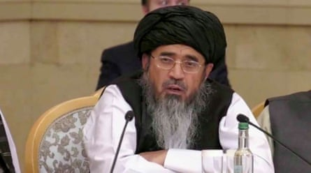

The international criminal court has issued arrest warrants for two senior Taliban leaders, accusing them of crimes against humanity for the persecution of women and girls.
In a statement, the ICC said on Tuesday there were “reasonable grounds to believe” the Taliban’s supreme leader, Haibatullah Akhundzada, and Afghanistan’s chief justice, Abdul Hakim Haqqani, had ordered policies that deprived women and girls of “education, privacy and family life and the freedoms of movement, expression, thought, conscience and religion”.
Afghan human rights activists have called for the Taliban’s system of depriving women and girls of rights and freedoms and enforcing segregation to be recognised as gender apartheid .
The Taliban’s chief justice, Abdul Hakim Haqqani.
Tahera Nasiri, an Afghan women’s rights activist now living in Canada, said the arrest warrant was an acknowledgment of the abuses Afghan women faced. “For four years, the Taliban have told us to stay silent, stay at home, cover our faces, give up our education, our voices and our dreams. Now, an international court is saying: ‘Enough. This is a crime.’
“Even if Akhundzada and Haqqani never sit in court, they now carry the mark of international criminals,” she said. “They are no longer just leaders of Afghanistan , they are wanted men.”
The court said the alleged crimes had taken place since the Taliban took control of Afghanistan in 2021 until January 2025, when the ICC’s chief prosecutor first sought the warrant.
Since returning to power, the militant Islamists have banned women from paid work and girls from secondary education, as well as issuing a series of edicts that ban women from many areas of public life, including walking in parks and even speaking in public .
Human rights groups have called on the international community to support the ICC in enforcing the arrest warrants. Liz Evenson, Human Rights Watch ’s international justice director, said: “Senior Taliban leaders are now wanted men for their alleged persecution of women, girls, and gender non-conforming people.”
In June, the UN accused the Taliban of removing legal protections for women and turning the justice system into a tool for entrenching an “ institutionalised system of gender oppression , persecution and domination”. The UN report also highlighted the suspension of a law on violence against women that included protections against rape and forced marriage.
When announcing that he was seeking a warrant in January, the ICC’s chief prosecutor, Karim Khan, said the two leaders were “criminally responsible” for gender-based persecution in Afghanistan and that he would also be seeking warrants for the arrest of other Taliban leaders.
“Our commitment to pursue accountability for gender-based crimes , including gender persecution , remains an absolute priority,” he said.
Amnesty International has also called on the international community to recognise gender apartheid as a crime under international law.
Parwana Ibrahimkhail Nijrabi, a former Taliban prisoner now living in Germany, said: “Arresting these men won’t be easy, especially with some countries still engaging with the Taliban. But I hope member states of the ICC take this seriously and act to arrest them.”